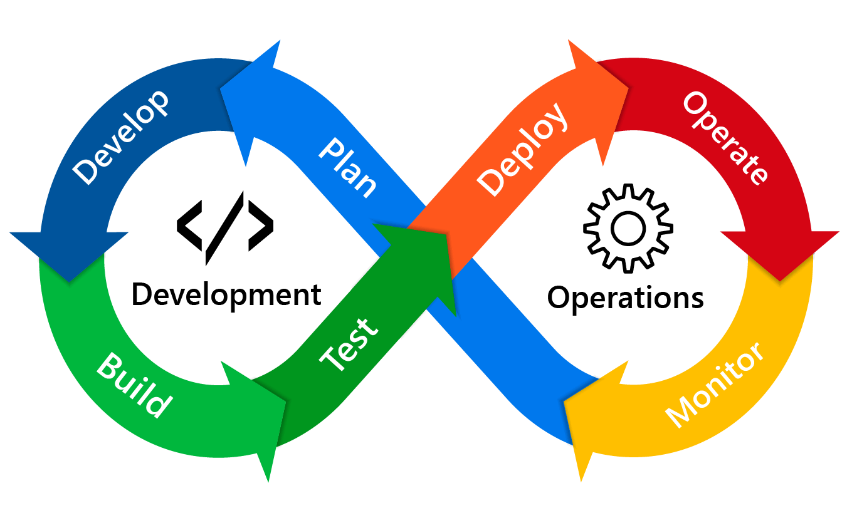
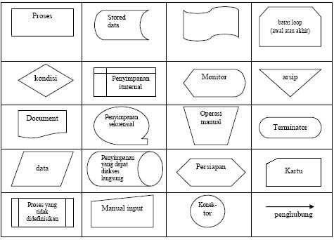
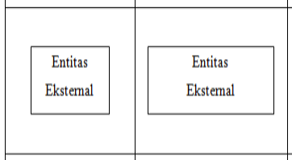
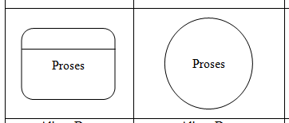
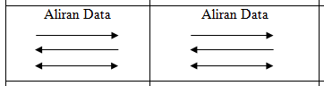
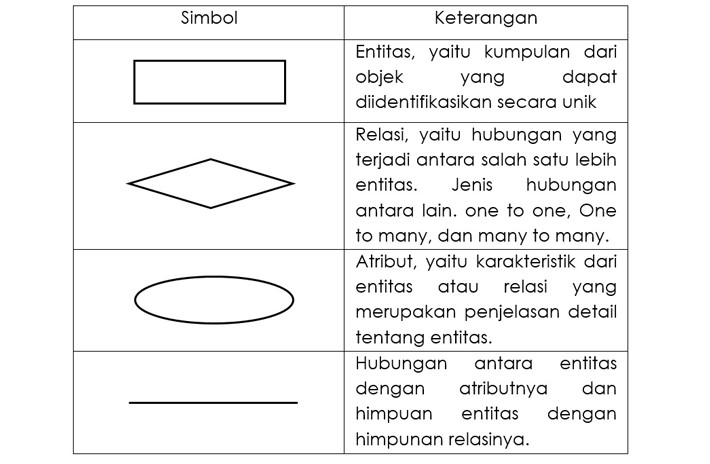

2.1 Metode DEVOPS
Kata DevOps gabungan dari dua kata yaitu development dan operations, metodologi pengembangan perangkat lunak yang menggabungkan pengembangan perangkat lunak (Dev) dengan operasi teknologi informasi (Ops). Tujuan dari DevOps adalah untuk memperpendek siklus hidup pengembangan sistem sambil memberikan fitur, perbaikan, dan pembaruan yang sejalan dengan tujuan bisnis. Dari perspektif akademik, Len Bass, Ingo Weber, dan Liming Zhu, kelompok peneliti di Software Engineering Institute memberikan definisi DevOps sebagai seperangkat praktik yang dimaksudkan untuk mengurangi waktu antara melakukan perubahan pada sistem dan perubahan yang ditempatkan pada produksi normal, sambil memastikan kualitas tinggi.
Dengan DevOps, tim pengembang perangkat lunak dan operasi tidak lagi bekerja secara terpisah atau terisolasi. Kadang kala, kedua tim ini digabungkan menjadi satu tim di mana para engineer bekerja di seluruh siklus aplikasi, mulai dari pengembangan dan pengujian hingga proses deploy dan operasional. Keterampilan tidak terbatas pada satu fungsi saja. Dalam beberapa model DevOps, tim penjaminan mutu (Quality Assurance) dan keamanan (Security) juga dapat menjadi lebih terintegrasi dengan pengembang dan operasi sepanjang siklus hidup aplikasi. Ketika keamanan menjadi fokus semua orang di tim DevOps, ini terkadang disebut sebagai DevSecOps. Tim-tim ini menggunakan praktik untuk mengotomatiskan proses yang secara historis bersifat manual dan lambat. Mereka menggunakan tumpukan teknologi (Technology Stack) dan perkakas (Tools) yang membantu mereka mengoperasikan dan mengembangkan aplikasi dengan cepat dan andal. Alat-alat ini juga membantu engineer menyelesaikan tugas secara mandiri (misalnya, menggunakan kode untuk penyediaan infrastruktur) yang biasanya membutuhkan bantuan dari tim lain, dan ini semakin meningkatkan kecepatan tim.

Metode DevOps memiliki siklus hidup dalam pengembangan proyek perangkat lunak. Berikut adalah penjelasan tentang siklus hidup metode DevOps.
1. Plan
Pada tahap perencanaan, proses identifikasi tujuan dan persyaratan untuk merancang dan mengembangkan perangkat lunak. Selain itu kegiatan lain yang dilakukan pada tahapan ini yaitu manajemen proyek, penjadwalan, rencana perilisa, kebijakan/persyaratn, serta rencana awal untuk pembaharuan dan perilisan di seluruh iterasi.
2. Develop
Berdasarkan pada tahapan sebelumnya, tim pengembang berfokus untuk mengembangkan dan meninjau kode perangkat lunak atau IaC. Kode aplikais dikembangkan dengan menggunakan Bahasa pemrograman dan IDE yang sesuai dan dikelola dengan menggunakan sistem kontrol versi. Pengujian integrasi dan unit dilakukan dengan berdasarkan build automation tools.
3. Build
Pada tahap ini integrasi dari berbagai modul perangkat lunak dilakukan untuk membuat file yang dapat dieksekusi untuk fitur produk atau produk yang dikembangkan sepenuhnya. Selain itu terdapat proses evaluasi untuk mengukur tingkat kesesuaian hasil pengembangan perangkat lunak dengan persyaratan yang telah ditetapkan.
4. Test
Pada tahap ini pengujian otomasi dilakukan secara terus-menerus untuk memastikan kualitas perangkat lunak yang telah dikembangkan. Tujuan lain dari pengujian adalah untuk memastikan bahwa potensi kesalahan yang muncul di dalam perangkat lunak yang dikembangkan telah dihilangkan dan untuk memastikan aplikasi/perangkat lunak yang handal telah dikirim.
5. Deploy
Tahap ini berfokus pada penerapan ulang perangkat lunak secara terus-menerus di lingkungan produksi. Fase ini melibatkan masalah manajemen konfigurasi platform dan sumber daya target. Akan tetapi Jika berhasil diterapkan, fitur atau produk siap untuk dirilis.
6. Operate
Operasi dalam siklus DevOps berkaitan dengan konfigurasi dan pengelolaan aplikasi perangkat lunak setelah penerapan, misalnya, penyediaan sumber daya dan penskalaan otomatis. Orchestrator dan metode runtime lainnya dapat digunakan untuk secara otomatis membuat instance dan menyesuaikan topologi dan komponen aplikasi pada saat run-time.
7. Monitor
Kinerja aplikasi yang diterapkan dipantau dengan mengumpulkan dan menganalisis data penggunaan yang dapat membantu mendeteksi dan mengidentifikasi pengecualian dan memberikan umpan balik untuk peningkatan perangkat lunak secara berulang. Penelusuran dan diagnostic masalah berkelanjutan sangatlah penting untuk memandu pengembangan aplikasi di seluruh siklus rilis.
2.2 Laundry
Menilik dari kata dasarnya, laundry adalah kata benda yang mengacu pada tindakan mencuci pakaian, tempat mencuci pakaian, atau pakaian yang telah dicuci. Kegiatan ini juga bisa dihubungkan pada kegiatan mencuci bahan tekstil atau tempat untuk mencuci bahan tekstil. Jadi kata laundry menghubungkan kegiatan mencuci dan tempat mencuci pada waktu dan lokasi yang bersamaan. Sedangkan usaha laundry adalah sebuah usaha di bidang jasa yang menawarkan cuci pakaian dan sejenisnya yang umum digunakan oleh konsumen.
Ada beberapa hal yang membuat usaha laundry rumahan sangat dibutuhkan oleh masyarakat dan sangat potensial untuk berkembang. Beberapa alasan bisnis laundry sangat dibutuhkan masyarakat antara lain:
• Masyarakat tidak memiliki waktu untuk mencuci pakaian setiap hari karena kesibukannya. Umumnya aktivitas yang padat seperti di kota besar menuntut adanya jasa laundry untuk mencuci baju kotor. Meski terlihat sederhana, tapi aktivitas mencuci pakaian kotor membutuhkan waktu dan tenaga ekstra mulai dari membilas, mencuci, menjemur, hingga menyetrika dan melipat.
• Dengan jasa yang praktis dan hasil yang memuaskan, waktu yang seharusnya digunakan untuk mencuci sendiri di rumah bisa digunakan untuk istirahat atau melakukan aktivitas produktif lainnya. Ini yang membuat banyak orang memilih untuk melaundry pakaian dan menggunakan waktu luang untuk istirahat atau bersenang-senang.
• Jasa laundry memiliki keahlian dalam membersihkan berbagai jenis pakaian dari segala jenis. Bisa dipahami bahwa tidak semua orang memiliki pemahaman tentang bagaimana mencuci jaket berbulu, jaket kulit, atau bahkan kain kebaya dengan banyak manik-manik. Untuk itulah jasa laundry sangat tepat untuk mengerjakannya secara profesional.
Dalam perkembangannya, bisnis laundry ini juga terbagi lagi menjadi beberapa kategori sesuai dengan peruntukan, jenis barang yang di laundry, dan juga kapasitas laundry yang dibebankan oleh masing-masing pengusaha. Berikut ini beberapa jenis usaha laundry yang harus kamu ketahui agar nantinya bisa memilih mana yang sesuai dengan kemampuanmu dan target pasar.
• Laundry Kiloan
Usaha laundry kiloan memungkinkan kamu untuk mencuci pakaian dalam jumlah yang banyak sekaligus. Hal ini memudahkan pengusaha laundry untuk mencuci karena bisa langsung melakukan proses pencucian dalam satu mesin dan tidak tercampur dengan pelanggan lainnya. Hal ini juga dinilai lebih murah karena menghemat waktu dan tenaga. Bagi pelanggan, mereka harus mengumpulkan terlebih dahulu pakaian kotor hingga mencapai minimal berat yang ditetapkan untuk mendapatkan harga yang murah. Peralatan yang dibutuhkan untuk membuka usaha laundry kiloan adalah mesin cuci otomatis yang sekaligus dapat mengeringkan pakaian.
• Laundry Koin (Laundromat)
Laundry koin adalah laundry yang menerapkan proses pencucian dengan mesin yang dijalankan melalui pembelian koin. Biasanya pelanggan akan membeli koin untuk menjalankan mesin dan melakukan pencucian secara mandiri mulai dari awal hingga pakaian kering dan siap dilipat. Harga untuk usaha laundry koin ini terbilang lebih murah dibandingkan dengan laundry konvensional atau laundry kiloan karena pelanggan terlibat langsung dalam proses pencucian. Pengusaha laundry hanya menyewakan mesin cuci dan mesin pengering dan tidak bertanggung jawab terhadap pakaian yang dicuci oleh pelanggan. Para pelanggan yang menggunakan jasa laundry koin ini biasanya menjaga privasi atas pakaian yang mereka cuci. Meskipun demikian, modal untuk membuka usaha laundry koin ini cukup besar karena mesin yang dibutuhkan cukup mahal.
• Laundry Sepatu
Selain mencuci pakaian sehari-hari, ada juga laundry sepatu yang khusus dibuat untuk mencuci sepatu. Terkesan seperti usaha yang sepele, tapi di kota-kota besar mencuci sepatu hingga bersih dengan tenaga profesional cukup diminati. Apalagi untuk kolektor sepatu-sepatu antik dan hobi. Tentunya laundry sepatu dengan keahlian dan peralatan canggih menjadi garansi agar sepatu mahal dan hobi tersebut terawat dengan baik.
• Laundry Konvensional
Laundry konvensional paling umum dijumpai dan sering dijadikan usaha laundry di beberapa tempat karena menyasar kalangan yang ingin mencuci secara spesifik. Misalnya ada yang ingin mencuci dengan cara dry clean, atau pakaian dengan ketentuan mencuci yang lebih detail dan penanganan khusus. Tentu harga yang ditawarkan juga semakin mahal dibandingkan dengan laundry koin ataupun laundry kiloan. Meski begitu, biaya yang dibutuhkan untuk membuka bisnis laundry konvensional juga lebih besar.
• Laundry Bisnis
Berbeda dari laundry konvensional yang melayani pelanggan satuan, laundry bisnis melayani laundry untuk sebuah bisnis usaha atau korporasi. Biasanya pelanggan dari laundry bisnis adalah perusahaan untuk mencuci seragam karyawannya. Untuk membuka usaha laundry bisnis tentu membutuhkan modal yang besar karena biasanya perusahaan yang menggunakan jasa laundry mencuci puluhan dan ratusan seragam dalam waktu yang bersamaan. Ditambah lagi setiap perusahaan memiliki standar berbeda yang harus bisa dipenuhi oleh pengusaha laundry.
• Laundry Hotel
Dari namanya kita bisa tahu bahwa laundry hotel fokus pada pengadaan jasa laundry untuk keperluan sebuah hotel. Kerjasama dengan hotel tentu saja menjadi sebuah beban tersendiri namun juga cukup potensial. Hampir sama dengan jasa laundry bisnis, kamu perlu menyiapkan mesin khusus untuk mencuci perlengkapan kamar hotel seperti sprei, bed cover, tirai, dan lain sebagainya. Belum lagi pakaian tamu hotel yang bervariasi membuat kamu harus siap dengan berbagai jenis bahan tekstil.
• Laundry Ekspres
Jenis laundry ekspress menjanjikan kecepatan dalam pengerjaannya. Seorang pelanggan rela membayar mahal untuk pakaian yang dicuci dan harus siap pakai dalam waktu yang singkat. Untuk membuka jasa laundry ekspress ini, berarti kamu membutuhkan mesin cuci yang cepat dan juga pegawai dengan keahlian dan dedikasi tinggi untuk bisa menyiapkan semuanya dengan cepat sesuai dengan standar yang telah ditentukan.
Selain mencuci pakaian sehari-hari, ada juga laundry sepatu yang khusus dibuat untuk mencuci sepatu. Terkesan seperti usaha yang sepele, tapi di kota-kota besar mencuci sepatu hingga bersih dengan tenaga profesional cukup diminati. Apalagi untuk kolektor sepatu-sepatu antik dan hobi. Tentunya laundry sepatu dengan keahlian dan peralatan canggih menjadi garansi agar sepatu mahal dan hobi tersebut terawat dengan baik.
2.3 Kasir
Kasir adalah orang yang bertugas untuk mengurusi dan menyimpan hasil pembayaran terutama uang, dan memasukkannya ke dalam mesin kasir. Kasir dapat ditemukan di berbagai tempat, terutama di tempat-tempat yang memiliki titik penjualan seperti di dalam toko. Kasir juga dapat merujuk pada orang yang menghimpun, menghitung, dan mengirimkan uang kepada nasabah di suatu kantor cabang sebuah bank. Istilah tersebut juga disebut sebagai teller bank. Tempat kasir menerima dan menyimpan uang hasil penjualan disebut kasa.
Selain istilah kasir, ada juga istilah kassa. Keduanya mempunyai perbedaan. Kasir adalah orangnya, sedangkan kassa adalah tempatnya. Profesi kasir di toko retail atau minimarket adalah seseorang yang pekerjaannya menerima uang pembayaran saat pembelian produk barang atau jasa dan melakukan pengembalian uang sisa pembayaran, sekaligus menyerahkan produk barang atau jasa kepada pelanggan (customer) di loket-loket kasir di suatu toko, super market, mini market, hotel, mall, restoran, rumah sakit, ataupun departement store. Selain itu, tugas kasir juga melakukan penghitungan jumlah total penjualan per hari, per minggu, ataupun per bulan serta mengenali barang yang paling laris terjual.
Tugas Kasir yakni sebagai berikut :
• Menjalankan proses penjualan dan pembayaran
• Melakukan pencatatan atas semua transaksi
• Membantu pelanggan dalam memberikan informasi mengenai suatu produk
• Melakukan proses transaksi pelayanan jual beli serta melakukan pembungkusan
• Melakukan pengecekan atas jumlah barang pada sat penerimaan barang
• Melakukan pencatatan kas fisik serta melakukan pelaporan kepada atasan.
• Melakukan pengecekan atas stok bulanan
2.3 Web
Situs web (bahasa Inggris: website) adalah sekumpulan halaman web yang saling berhubungan yang umumnya berada pada peladen yang sama berisikan kumpulan informasi yang disediakan secara perorangan, kelompok, atau organisasi. Sebuah situs web biasanya ditempatkan setidaknya pada sebuah server web yang dapat diakses melalui jaringan seperti Internet, ataupun jaringan area lokal (LAN) melalui alamat Internet yang dikenali sebagai URL. Gabungan atas semua situs yang dapat diakses publik di Internet disebut pula sebagai World Wide Web atau lebih dikenal dengan singkatan WWW. Meskipun setidaknya halaman beranda situs Internet umumnya dapat diakses publik secara bebas, pada praktiknya tidak semua situs memberikan kebebasan bagi publik untuk mengaksesnya, beberapa situs web mewajibkan pengunjung untuk melakukan pendaftaran sebagai anggota, atau bahkan meminta pembayaran untuk dapat menjadi aggota untuk dapat mengakses isi yang terdapat dalam situs web tersebut, misalnya situs-situs yang menampilkan situs-situs berita, layanan surel (e-mail), dan lain-lain. Pembatasan-pembatasan ini umumnya dilakukan karena alasan keamanan, menghormati privasi, atau karena tujuan komersial tertentu.
Website terbagi kedalam tiga jenis yakni website statis, website dinamis dan website interaktif. Website statis merupakan website yang memiliki tampilan yang tetap dan tidak banyak mengalami perubahan. Biasanya untuk perubahannya sendiri hanya terletak pada tampilan desain halaman web saja, terkait konten tidak mengalami perubahan yang besar. Contoh dari web statis yaitu website yang menampilkan profil perusahaan atau organisasi. Website dinamis adalah website yang mengalami perubahan secara terus menerus sesuai dengan kebutuhan dan relevansi dari bisnis dan perkembangan zaman. Website dinamis memiliki tampilan yang lebih interaktif, dan menyediakan fitur kolom komentar, dan chatting. Contoh dari situs web ini adalah blog, situs berita online, e-commerce, sistem informasi, dan lain sebagainya. Website interaktif adalah website yang dirancang untuk dapat saling berinteraksi antar penggunanya. Jenis situs ini biasanya tergolong ke dalam platform media sosial seperti Facebook, Twitter, Instagram, dan platform social media yang lain.
2.5 Flowmap
Flowmap adalah campuran peta dan flow chart,yang menunjukan pergerakan benda dari satu lokasi ke lokasi lain, seperti jumlah orang dalam migrasi, jumlah barang yang diperdagangkan, atau jumlah paket dalam jaringan. Flowmap menolong analisis dan programmer untuk memecahkan masalah ke dalam segmen-segmen yang lebih kecil dan menolong dalam menganalisis alternaitf-alternatif lain dalam pengoprasian.
Bila seorang analis dan programmer akan membuat flowmap , ada beberapa petunjuk yang harus diperhatikan, sepeti :
• Flowmap digambarkan dari halaman atas ke bawah dan kiri ke kanan.
• Aktivitas yang digambarkan harus didefinisikan secara hati-hati dan definisi ini harus dapat di mengerti oleh pembacanya.
• Kapan aktivitas dimulai dan berakhir harus di tentukan secara jelas.
• Setiap langkah dari aktivitas harus berada pada urutan yang benar.
• Lingkup dan range dari aktifitas yang sedang di gambarkan harus di telusuri dengan hati-hati.
• Gunakan simbol-simbol flowchart yang standar.
Kegunaan dari Flow Map adalah sebagai berikut :
• Menggambarkan aktivitas apa saja yang sedang berjalan.
• Menjabarkan aliran dokumen yang terlihat.
• Menjelaskan hubungan-hubungan data dan informasi dengan bagian-bagian dalam aktivitas tersebut.
• Mendefinisikan hubungan antara bagian (pelaku proses), proses (manual/berbasis komputer) dan aliran data (dalam bentuk dokumen keluaran dan masukan).
Simbol Fowmap

• Dokumen : Menunjukan dokumen input atau output untuk proses manual atau komputer.
• Proses : Kegiatan proses yang di lakukan dengan komputerisasi.
• Proses Manual : Kegiatan proses yang di lakukan dengan manual.
• Garis alir : Menunjukan alir data dari atau ke proses.
• Data store : Menunjukan penyimpanan arsip atau dokumen non komputer.
• Database : Tempat penyimpanan data berbasis database.
• Data elektronik : Menunjukan laporan data elektronik (Dianty, 2016)
2.6 Data Flow Diagram (DFD)
DFD adalah suatu diagram yang menggambarkan aliran data dari sebuah proses yang sering disebut dengan sistem informasi. Di dalam data flow diagram juga menyediakan informasi mengenai input dan output dari tiap entitas dan proses itu sendiri.
Dalam diagram alir data juga tidak mempunyai kontrol terhadap flow -nya, sehingga tidak adanya aturan terkait keputusan atau pengulangan. Bentuk penggambaran berupa data flowchart dengan skema yang lebih spesifik. Menurut Kenneth Kozar, tujuan dari adanya DFD sendiri adalah sebagai penyedia atau menjembatani antara pengguna dengan sistem. Data flow diagram berbeda dengan UML (Unified Modelling Language), dimana hal mendasar yang menjadi pembeda antara kedua skema tersebut terletak pada flow dan objective penyampaian informasi di dalamnya.
Data flow diagram terbagi menjadi tiga jenis, dimana setiap bagian memiliki peran dan fungsinya masing – masing. Untuk pembuatannya sendiri dapat menyesuaikan kebutuhan proyek dari manajemen tim -nya
• Diagram Level 0 (Diagram Konteks).
Diagram konteks atau level 0 merupakan diagram dengan tingkatan paling rendah, dimana menggambarkan sistem berinteraksi dengan entitas eksternal. Pada diagram konteks akan diberi nomor untuk setiap proses yang berjalan, dimulai dari angka 0 terlebih dahulu. Jadi, untuk setiap aliran data akan langsung diarahkan menuju sistem. Dan ciri dari diagram level 0 terletak pada tidak adanya informasi yang terkait data yang tersimpan pada data store.
• Diagram Level 1
DFD level 1 merupakan lanjutan dari diagram konteks, dimana setiap proses yang berjalan akan diperinci pada tingkatan ini. Sehingga, proses utama akan dipecah menjadi sub – sub proses yang lebih kecil lagi.
• Diagram Level 2
DFD level 2 merupakan tingkat lanjutan dari level yang sebelumnya, dimana pada fase ini akan dijelaskan lebih detail terkait tiap prosesnya. Namun, untuk tingkatan ini jarang sekali dikerjakan dan lebih banyak hanya menerapkan dua level di bawahnya saja. (Andani, 2021)
Berikut adalah simbol yang digunakan didalam DFD :
• Entitas/Entity/Terminator
Simbol yang memiliki fungsi sebagai orang, organisasi dan sejenisnya yang berada diluar sistem tetapi berinteraksi dengan sistem. Simbol ini perlu diberi nama sesuai dengan aslinya biasanya menggunakan kata benda seperti: pekerja, dosen, mahasiswa, sistem penjualan dan lainnya tergantung sistem yang akan dibuat

• Proses
Proses merupakan kegiatan atau pekerjaan yang memproses data inputan dari entitas ke output. Biasanya untuk proses diberikan kata kerja seperti: bekerja, mengajar, belajar, menjual dan sebagainya tergantung dari entitas awal.

• Aliran Data
Aliran data berfungsi untuk menerangkan aliran data atau informasi dari simbol satu ke simbol lainnya. Biasanya pemberian nama pada aliran data juga menggunakan kata benda.

• Data Store
Data Store atau data source merupakan simbol yang ada kaitannya dengan penyimpanan seperti file atau database. Simbol database biasanya berada setelah simbol proses untuk menyimpan output pemrosesan.
Dalam penamaan data store ini diisi sesuai dengan data apa yang disimpan seperti gaji, golongan, karyawan dan lain-lain.

2.7 Entity Relationship Diagram (ERD)
ERD adalah model atau rancangan untuk membuat database, supaya lebih mudah dalam menggambarkan data yang memiliki hubungan atau relasi dalam bentuk sebuah desain. Dengan adanya ER diagram, maka sistem database yang terbentuk dapat digambarkan dengan lebih terstruktur dan terlihat rapi.
ERD biasanya erat kaitannya dengan Data Flow Diagram (DFD) untuk menampilkan sebuah data store. Tujuannya adalah untuk memvisualisasikan bagaimana proses data dapat saling terhubung dan dapat mengkonstruksi data relasional.
Berikut ini adalah beberapa penjelasan mengenai istilah dan komponen apa saja yang berada pada ERD :

• Entitas
Entitas adalah sebuah objek berwujud nyata yang dapat dibedakan dengan objek lainnya. Objeknya dapat bersifat konkret maupun abstrak. Data konkret adalah sesuatu yang benar-benar ada atau dapat dirasakan oleh alat indra, sedangkan abstrak tidak berwujud.
Orang, buku, pegawai, perusahaan merupakan jenis entitas konkret. Berbeda dengan mata kuliah, kejadian, pekerjaan adalah benda tak berwujud.
• Attribut/field
Setiap entitas memiliki atribut untuk mendeskripsikan karakteristik dari suatu entitas. Untuk jenisnya dibedakan menjadi beberapa jenis, yaitu:
Atribut key, atribut yang unik dan berbeda. Misalnya, Nomor pokok mahasiswa (NPM), NIM dan nomor pokok lainnya.
Atribut Composite, atribut yang terdiri dari beberapa sub atribut yang memiliki arti tertentu. Contohnya, nama lengkap yang dipecah menjadi nama depan, tengah, dan belakang.
Dan atribut deviratif, yang dihasilkan dari atribut atau relasi lain. Jenis atribut ini tidak wajib ditulis dalam diagram ER atau pun disimpan dalam database. Sebagai contoh deriative attribute adalah usia, kelas, selisih harga, dan lain-lain.
• Relasi
hubungan antar entitas untuk menunjukkan adanya koneksi di antara sejumlah entitas yang berasal dari himpunan entitas berbeda. Misalnya, dalam hubungan entitas sistem akademik antara mahasiswa dan mata kuliah adalah “mengambil”. Mahasiswa mengambil mata kuliah.
Dalam ERD terdapat kardinalitas relasi atau rasio kardinalitas untuk memetakan bagaimana data berhubungan satu sama lain yang terbagi menjadi empat, yaitu:
Pengertian ERD Pertama, One to One (1:1). Apa maksud dari satu ke satu ini? Misalnya terdapat entitas A dan B. Setiap entitas pada himpunan entitas A berhubungan paling banyak dengan satu entitas pada himpunan entitas B, begitu pun sebaliknya. Jadi, setiap anggota entitas A hanya boleh berhubungan dengan satu anggota entitas B saja. Contohnya, satu siswa (1) memiliki satu nomor siswa (1), dan sebaliknya.
Pengertian ERD Kedua, One to many (1:M). Satu ke Banyak ini maksudnya adalah setiap entitas pada himpunan entitas A dapat berhubungan dengan banyak entitas pada himpunan entitas B. Dengan kata lain, setiap anggota entitas A dapat berhubungan dengan lebih dari satu anggota entitas B. Akan tetapi, tidak sebaliknya. Contoh dari relasi One to Many ini adalah satu kelas (1) berisi banyak siswa (M), atau siswa mengikuti banyak ekstrakurikuler.
Pengertian ERD Ketiga, Many to One (M:1). Relasi ini merupakan kebalikan dari relasi sebelumnya. Untuk contohnya, yaitu banyak pegawai (M) bekerja dalam satu departemen (1), atau banyak dosen mengajar dalam satu mata kuliah.
Pengertian ERD Keempat, Many to Many (M:N). Setiap entity pada kumpulan entitas A dapat berhubungan dengan banyak entitas pada kumpulan data entitas B. Misalnya, banyak siswa (M) mempelajari banyak pelajaran (N). Demikian pula sebaliknya, banyak pelajaran (N) dipelajari banyak siswa (M). (Sulthon, 2021)